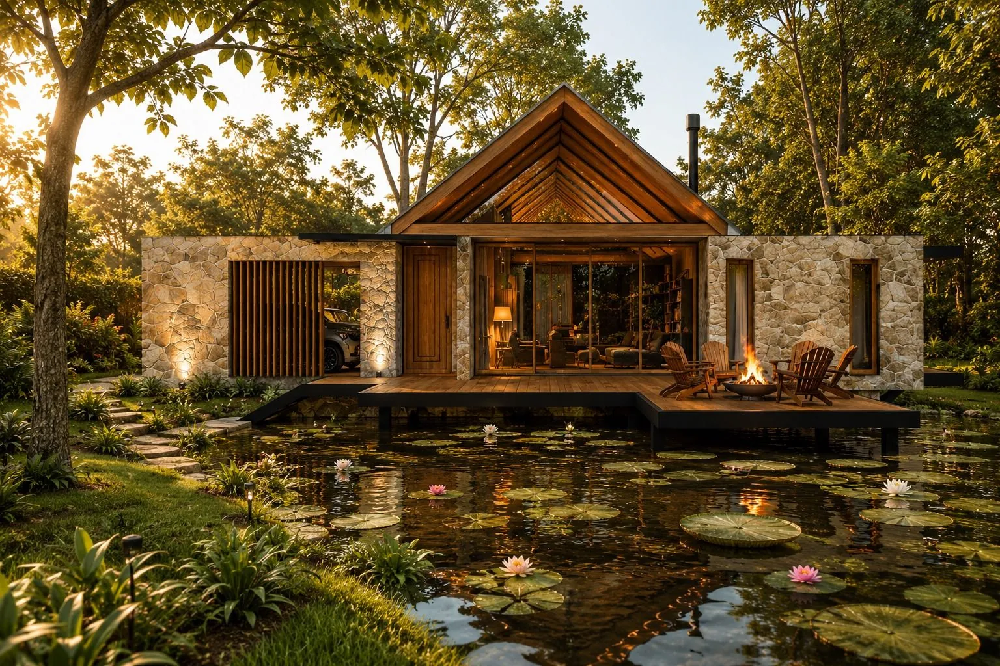

Residencial
Casa Vitória Régia
Pedra, madeira e vidro em uma casa que se debruça sobre a água. O deck avança sobre o lago, o fogo reúne a família ao entardecer e a natureza entra pelas grandes aberturas.
“Cada história, uma essência. Cada essência, uma arquitetura.”

Criar lugares que se conectem com a história de cada cliente, tornando único cada projeto. A linha que sigo é a da sua história, e é ela que me dá liberdade para explorar diferentes caminhos na arquitetura.
A partir dessa leitura, uno a sua história à essência em que acredito: uma arquitetura que acolhe, aproxima a natureza do dia a dia e transforma a forma como a gente se sente em um lugar.
Acredito que o contato com a natureza transforma a maneira como nos sentimos em um espaço. Por isso, desde a primeira conversa, penso em como os quatro elementos da natureza podem estar presentes em cada projeto.
Essa presença pode ser sutil. A forma de incorporar cada elemento nasce da história de cada cliente e da sensação que queremos despertar naquele lugar.
na textura da pedra
no som da água
no calor de uma lareira
na brisa que atravessa o ambiente
Projetos pensados a partir das pessoas, da paisagem e dos sentidos.
Pedra, madeira e vidro em uma casa que se debruça sobre a água. O deck avança sobre o lago, o fogo reúne a família ao entardecer e a natureza entra pelas grandes aberturas.
Módulos de madeira e estrutura preta pousados sobre a água, no meio da mata. Grandes panos de vidro trazem a paisagem para dentro, e a luz quente acolhe ao anoitecer.
Madeira, pedra e plantas em volta da piscina. Uma casa pensada para desacelerar, aberta para o jardim e para a luz do fim de tarde.
Uma casa de verão para reunir a família e criar memórias. A arquitetura de inspiração americana e os interiores em tons claros dão forma a um refúgio acolhedor à beira do litoral.
Marcenaria sob medida com portas em arco e vidro canelado, luz embutida nas prateleiras, pedra na parede da churrasqueira e fibras naturais nos pendentes e nas cadeiras.
Terracota, verde-oliva e vitrais coloridos. Cobogós, marcenaria em tons de terra e a lareira criam uma casa quente, cheia de cor e de história.
Madeira, palha e tons de azul trazem a paisagem do litoral para um espaço comercial pensado para encontrar os amigos e aproveitar os dias de verão.
Tijolo, arcos iluminados e muito verde na fachada de uma academia que quer ser lugar de encontro, não só de treino.
Sou Arquiteta e Urbanista formada desde 2014. Em 2024, concluí minha especialização em Arquitetura Modular.
Acredito que a arquitetura tem o poder de mudar a forma como a gente se sente em um lugar. E, ao mudar o que a gente sente, ela também transforma a gente.
Pra mim, pertencimento é sentir que aquele lugar tem a ver com você. É com esse olhar que acolho cada história que chega até mim. Gosto de ter a liberdade de interpretar cada uma com cuidado e sensibilidade e, a partir dela, criar uma arquitetura única e autêntica.
Arquiteta e Urbanista · CAU A112795-0 · Criciúma, SC
Da primeira conversa à entrega das chaves, acompanho cada etapa. Desenvolvo o projeto, conduzo o processo de aprovação na prefeitura, preparo o detalhamento para a execução e acompanho a obra até a entrega.
Desenvolvo o projeto de interiores com marcenaria sob medida, iluminação e seleção de materiais e acabamentos. Entrego o detalhamento de cada elemento e acompanho a execução até a conclusão da obra.
Desenvolvo projetos para lojas, academias, escritórios e outros espaços comerciais, com atenção à identidade de cada negócio, à rotina da equipe e à experiência de quem chega.
Projeto casas que se abrem para a paisagem, entre o verde do campo e a brisa do mar. Uma arquitetura pensada para sentir a natureza de perto, dentro e fora de casa.
Do terreno à entrega das chaves, em quatro etapas.
Você me conta sua história, como vive, o que precisa, como quer se sentir no espaço e quanto quer investir. Eu escuto com atenção e interpreto com sensibilidade, para que tudo isso ganhe forma na arquitetura.
Gosto de caminhar pelo terreno, sentir a atmosfera do lugar e observar o sol, o vento, a paisagem, o perfil do terreno e a vizinhança. Tudo isso orienta as primeiras escolhas do projeto. É nessa visita que começo a imaginar como a arquitetura pode se encaixar ali com naturalidade, como o espaço vai funcionar no dia a dia e que sensação quero despertar.
Começo pelo estudo, em que te apresento as primeiras ideias para o espaço. Conversamos sobre cada ajuste e, com as escolhas alinhadas, desenvolvo o projeto completo.
Entrego o projeto com os detalhes necessários para que a obra seja bem executada. Também ofereço acompanhamento para esclarecer dúvidas da equipe e ajudar nas decisões que surgem à medida que o espaço ganha forma.